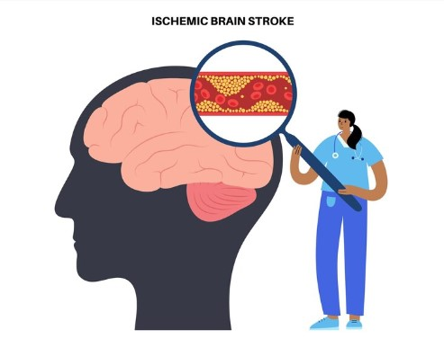

Cliquer ici pour remplir le formulaire de vos parametres
FormulaireA propos Le 29 octobre, c’est la Journée mondiale de l’accident vasculaire cérébral (AVC). Cette pathologie grave et redoutable touche 1 personne toutes les 5 secondes dans le monde selon l’OMS et la World Stroke Organisation. C’est pourquoi l’OMS n’hésite pas à parler de Pandémie et table sur une augmentation progressive de l’incidence des AVC dans le monde passant de 16 millions de cas en 2005 à près de 23 millions en 2030[1].L’Intelligence Artificielle (IA) peut potentiellement améliorer la détection des lésions, réduire les risques, voire améliorer la qualité de vie des patients ayant subi un AVC. Heureusement, il existe déjà des mesures technologiques simples, qui nous permettent d’anticiper, traiter, et même éviter les conséquences de cette affection dramatique, handicapante et mortelle.
